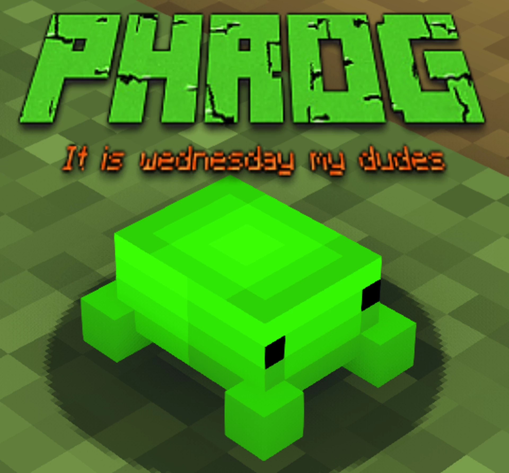
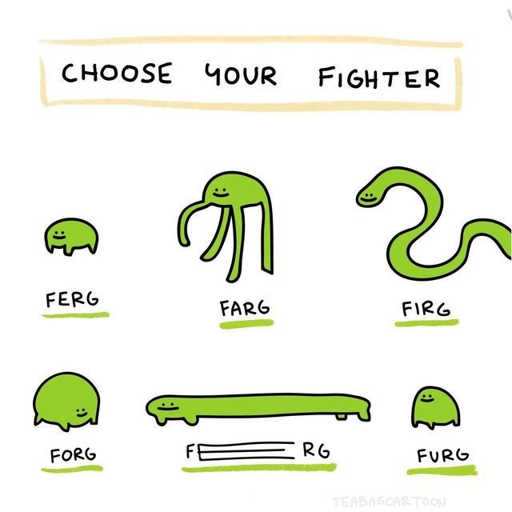

A phrog is a frog that is also a phish. It is a phrog.
Phrogs can be described in a great number of ways:
Their scientific name is Phrogus phrogibus.
This is a picture of a specific species of phrog, a beautiful Minecraft phrog.
Some educational videos about phrogs exist on the interwebs. However, the most scientifically accurate was made by NootyMcNooty. You can watch it here:
In case the player doesn't appear here above.
A ferg is similar to a phrog, but it is slightly more childish. It also comes in different shapes and sizes, as this informative chart can prove to you.
